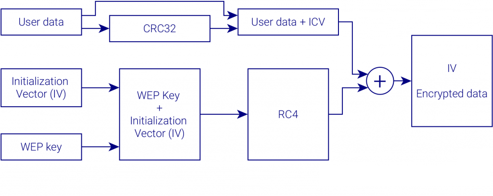

Wired Equivalent Privacy (WEP), en español «Privacidad equivalente a cableado», es el sistema de cifrado incluido en el estándar IEEE 802.11 como protocolo para redes Wireless que permite cifrar la información que se transmite. Proporciona un cifrado a nivel 2, basado en el algoritmo de cifrado RC4 que utiliza claves de 64 bits. WEP fue incluido como el método para asegurar la privacidad del estándar original IEEE 802.11 ratificado en septiembre de 1999.
WEP usa el algoritmo de cifrado RC4 para la confidencialidad, mientras que el CRC-32 proporciona la integridad. El RC4 funciona expandiendo una semilla ("seed" en inglés) para generar una secuencia de números pseudoaleatorios de mayor tamaño. Esta secuencia de números se unifica con el mensaje mediante una operación XOR para obtener un mensaje cifrado.
WEP es usado para la autenticación. Este método se puede dividir en cuatro fases:
El principal problema radica en que no implementa adecuadamente el vector de iniciación del algoritmo RC4, ya que utiliza un enfoque directo y predecible para incrementar el vector de un paquete a otro. Además existe un problema con el tamaño de los vectores de iniciación. A pesar de que se pueden generar muchos vectores, la cantidad de tramas que pasan a través de un punto de acceso es muy grande, lo que hace que rápidamente se encuentren dos mensajes con el mismo vector de iniciación.
Conociendo los IV utilizados repetidamente y aplicando técnicas relativamente simples de descifrado puede finalmente vulnerarse la seguridad implementada. Aumentar los tamaños de las claves de cifrado aumenta el tiempo necesario para romperlo, pero no resulta imposible el descifrado.